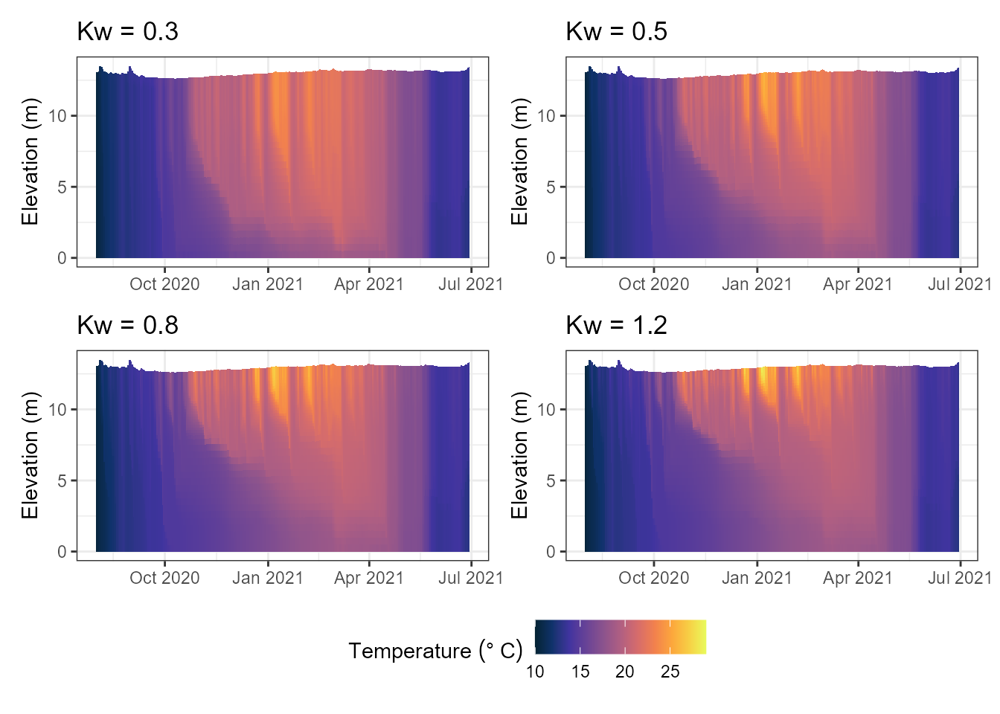

Testing Parameters Without a Full Rebuild
Source:vignettes/articles/testing-parameters.Rmd
testing-parameters.RmdIntroduction
build_aeme() -> run_aeme() is the right
pipeline for a real ensemble run, but re-running the whole
Aeme object just to check what one parameter does is slow,
and doesn’t matter for a five-minute “does this move the answer in the
direction I expect” check. Two lower-level tools skip the
Aeme object entirely and work straight on a model’s
configuration directory:
-
get_glm_param()/set_glm_param()(and the GOTM-WET/DYRESM-CAEDYM/ Simstrat-AED2 equivalents) – read or write one parameter in the raw config file. -
run_model_test()– apply a batch of changes (parameters, initial conditions, inflows, outflows) and run, all from a path alone.
Both need an existing build to work on – they edit files
build_aeme() already wrote, they don’t create one.
library(AEME)
# Plotting libraries for the scenario comparison at the end
library(ggplot2)
library(patchwork)
tmpdir <- tempdir()
aeme_dir <- system.file("extdata/lake/", package = "AEME")
file.copy(aeme_dir, tmpdir, recursive = TRUE)
path <- file.path(tmpdir, "lake")
aeme <- yaml_to_aeme(path = path, "aeme.yaml")
#> Warning: `yaml_to_aeme()` was deprecated in AEME 0.4.0.
#> ℹ Use `aeme_constructor()` to build an Aeme object from your own lake data, or
#> `new_aeme()` for a quick placeholder object to populate incrementally,
#> instead of a yaml file.
#> This warning is displayed once per session.
#> Call `lifecycle::last_lifecycle_warnings()` to see where this warning was
#> generated.
model_controls <- get_model_controls(use_bgc = FALSE)
model <- "glm_aed"
aeme <- build_aeme(path = path, aeme = aeme, model = model,
model_controls = model_controls, ext_elev = 5,
use_bgc = FALSE)
#> Warning: ! `SIL_rsi`: SIL_rsi is constant across all rows -- this may be a placeholder
#> value.
#> ℹ Check raw data or unit conversion for this variable.
#> Warning: GLM ignores the AirPres met column in daily mode and uses the default 1013.25 hPa instead.
#> This warning is displayed once per session.
path_glm <- file.path(get_lake_dir(aeme, path), "glm_aed")Reading and setting one parameter
path_glm now points at a real, built GLM-AED
configuration directory. get_glm_param() reads a value
straight out of the nml, wherever it’s nested:
get_glm_param(path_glm, "Kw")
#> [1] 1.31set_glm_param() writes one back – multiple
name = value pairs in one call, no need to know which
&block each belongs to:
set_glm_param(path_glm, Kw = 0.8, coef_mix_hyp = 0.3)
get_glm_param(path_glm, "Kw")
#> [1] 0.8This is a permanent edit to the file on disk (there’s no
Aeme object tracking it), so it’s ideal for a quick
before/after comparison but not for anything you want to reproduce later
– keep the parameter table AEME’s calibration tools use (see
vignette("aeme-inputs")) as the record for anything that
matters.
The AED biogeochemistry file takes the same call, passed explicitly
via glm_file:
set_glm_param(path_glm, glm_file = file.path(path_glm, "aed", "aed.nml"),
theta_sed_oxy = 1.08)GOTM-WET, DYRESM-CAEDYM and Simstrat-AED2 configuration directories
work the same way, with
get_gotm_param()/set_gotm_param(),
get_dy_cd_param()/set_dy_cd_param(), and
get_simstrat_param()/set_simstrat_param().
Running a what-if scenario
run_model_test() goes one step further: apply a batch of
overrides and run the model, in one call, without touching the
Aeme object at all.
out <- run_model_test("glm_aed", path_glm,
param_overrides = list(Kw = 0.5),
tgt_vars = "HYD_temp")
#> ℹ GLM-AED running... [2026-10-09 01:25:46]
#> ✔ GLM-AED running... [2026-10-09 01:25:47] [500ms]
#> The parameter change is written to disk exactly as
set_glm_param() would:
get_glm_param(path_glm, "Kw")
#> [1] 0.5param_overrides is forwarded to
set_glm_param(), so any parameter name that works there
works here. init, inflow_args and
outflow_args reach the model’s
set_*_init()/set_*_inflows()/set_*_outflows()
wrappers the same way – e.g. to test a different initial temperature
profile without re-running build_aeme():
run_model_test("glm_aed", path_glm,
init = list(temp = seq(20, 10, length.out = 10)),
tgt_vars = "HYD_temp")Reading back the result
out is the model’s own reader output
(read_glm_output(), for model = "glm_aed") –
tgt_vars names what you’re interested in, but the reader’s
own diagnostic fields (lake level, heat fluxes, ice, meteorology echoed
back, …) still come along with it:
dim(out$HYD_temp)
#> [1] 42 335
out$HYD_temp[1:3, 1:3]
#> [,1] [,2] [,3]
#> [1,] 10.2704 10.4809 10.6871
#> [2,] 10.2597 10.4792 10.6871
#> [3,] 10.1990 10.4290 10.6871out$HYD_temp is a [depth x time] matrix,
matching what get_var() returns from a full
Aeme object – so the same downstream code (plotting,
summary statistics) works whichever path produced it.
Comparing scenarios
The pattern for comparing a handful of candidate values: loop,
collecting one tgt_vars matrix per scenario.
kw_values <- c(0.3, 0.5, 0.8, 1.2)
results <- lapply(kw_values, function(kw) {
run_model_test("glm_aed", path_glm, param_overrides = list(Kw = kw),
tgt_vars = "HYD_temp")
})
#> ℹ GLM-AED running... [2026-10-09 01:25:48]
#> ✔ GLM-AED running... [2026-10-09 01:25:48] [498ms]
#>
#> ℹ GLM-AED running... [2026-10-09 01:25:49]
#> ✔ GLM-AED running... [2026-10-09 01:25:50] [477ms]
#>
#> ℹ GLM-AED running... [2026-10-09 01:25:51]
#> ✔ GLM-AED running... [2026-10-09 01:25:51] [489ms]
#>
#> ℹ GLM-AED running... [2026-10-09 01:25:52]
#> ✔ GLM-AED running... [2026-10-09 01:25:52] [506ms]
#>
names(results) <- paste0("Kw_", kw_values)
plist <- lapply(seq_along(results), \(i) {
plot_model_output(results[[i]], var_sim = "HYD_temp", var_lims = c(10, 29)) +
ggtitle(paste0("Kw = ", kw_values[i]))
})
wrap_plots(plist, ncol = 2, guides = "collect") &
theme(legend.position = "bottom")
#> Warning: Removed 84 rows containing missing values or values outside the scale range
#> (`geom_col()`).
#> Removed 84 rows containing missing values or values outside the scale range
#> (`geom_col()`).
#> Removed 84 rows containing missing values or values outside the scale range
#> (`geom_col()`).
#> Removed 84 rows containing missing values or values outside the scale range
#> (`geom_col()`).
For anything past a handful of candidates – a real sensitivity sweep
or a calibration – reach for aemetools instead
(aemetools::run_aeme_param()/sa_aeme()/calib_aeme()),
which builds on the same idea but works from the full parameter table
and the Aeme object, with proper sampling designs and
PEST++ integration.
When something goes wrong
By default (safe = TRUE) a failed edit or model run is
caught and reported with a message rather than stopping – useful when
looping over many candidate scenarios and one bad combination shouldn’t
abort the rest:
run_model_test("glm_aed", path_glm, param_overrides = list(lake_depth = -1))
# message: run_model_test error: ... ; returns NULL rather than erroringSet safe = FALSE while developing a scenario, so a
mistake surfaces immediately instead of silently returning
NULL.